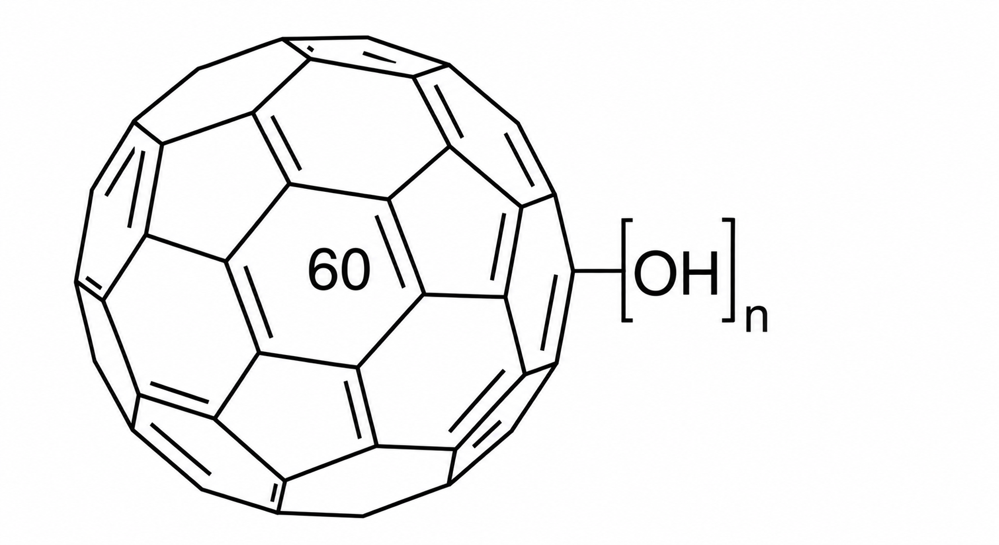
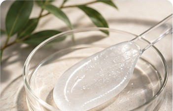
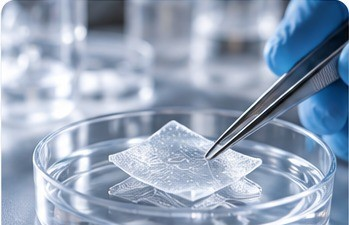
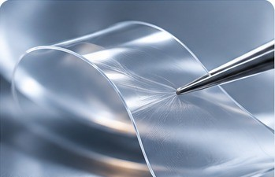

Antioxidant activity
Some fullerenols scavenge reactive oxygen species and reduce oxidative stress in experimental models.
C60(OH) Labs develops adaptive, water-rich fullerene-derived materials with distinctive hydration behavior—exploring new possibilities across cosmetics, healthcare, delivery systems, and advanced materials.
Experimental materials research. Application suitability has not yet been established.
Nobel Prize-winning discovery. Unique molecular properties.
Discovered in 1985, fullerenes earned Robert Curl, Harold Kroto, and Richard Smalley the 1996 Nobel Prize in Chemistry . Their carbon-cage structure gives them distinctive electronic and chemical properties.
Hydroxylated fullerenes, or fullerenols , add –OH groups to this framework, expanding chemical functionality and compatibility with water.

Some fullerenols scavenge reactive oxygen species and reduce oxidative stress in experimental models.
Hydroxylation can improve aqueous dispersibility relative to unmodified fullerenes.
Distinctive light absorption and electron-transfer behavior enable photodynamic and electronic research.
Chemically modifiable surfaces support interactions with other molecules and materials.
Oxygen-containing groups can interact with metal ions in structured material systems.
Properties vary with composition, functionalization, and experimental conditions. These are fullerene research findings, not validated performance claims for C60(OH) hydrogel.
For decades, practical use of fullerene-derived materials has faced challenges in aqueous formulation, structural organization, and durability. C60(OH) Labs has developed a material platform demonstrating new ways to address these barriers.
Limited aqueous compatibility and aggregation challenges
Difficulty achieving controlled, functional assemblies
Challenges retaining structure through environmental changes
A highly hydrated fullerene-derived matrix
Structured material with reversible hydration behavior
Observed after repeated washing and rehydration
The breakthrough isn't simply making fullerenes water-compatible. It's creating a structured, water-rich material that retains distinctive behavior through washing, drying, and rehydration.
Observed material behaviors; broader reproducibility, composition, long-term stability, safety, and application-specific performance remain under validation.
We are exploring where C60(OH)'s observed material behavior and fullerene-derived chemistry could support application-specific research and development.

Formulation research, hydration systems, antioxidant testing, and cosmetic aftercare.

Exploratory biomaterials, wound-care research, and skin-focused material applications.
Investigating loading, molecular interactions, release, and carrier-system behavior.

Functional interfaces, coatings, composites, and other water-compatible systems.
All application areas are research directions; suitability, efficacy, and regulatory status have not been established.
Complementary analytical techniques help us investigate the structure, composition, and behavior of the material. These results guide the next stage of quantitative and application-specific validation.
Comparative spectral features across standard and washed samples.
Investigation of functional-group-related spectral features.
Surface elemental composition and chemical environments.
Morphology of prepared, dried material samples.
Next priorities: validated quantitative assays, batch reproducibility, material mechanics, cytotoxicity, redox activity, and formulation performance. Characterization alone does not establish biological efficacy or safety.
We welcome inquiries from scientific institutions, formulation teams, industrial developers, and strategic partners interested in evaluating the material.
01 Material samples for independent research
02 Application-specific testing and development
03 Joint R&D and strategic partnerships
C60(OH) Labs is a Seattle-based advanced materials venture developing fullerene-derived hydrogel technology. We combine experimental materials research with analytical characterization and industry collaboration to investigate new applications.
Our focus is to establish reproducible properties, credible evidence, and commercially relevant pathways for a novel material platform.
julia@c60oh.com ↗